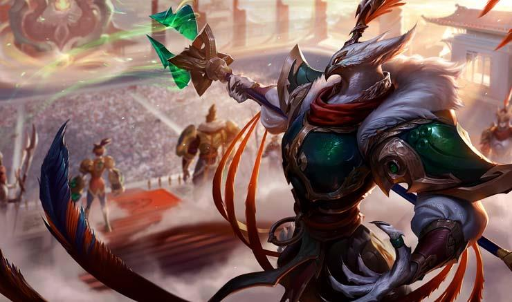

불멸을 꿈꾸던 고대 슈리마의 거만한 황제, 아지르. 그의 오만은 생애 최전성기에 그를 배반과 죽음으로 몰아 넣었다. 그 후 수천 년이 흘렀고, 아지르는 가공할 힘을 지닌 초월체로 다시 태어났다. 사막 아래 묻혀 있던 그의 도시가 지표면 위로 솟아 오르는 장관을 목도하며 아지르는 슈리마 제국의 옛 영광을 되살리겠다고 다짐한다. 
"룬테라의 찬란한 대제국, 슈리마. 그 영광을 기필코 되살리리라."
불멸을 꿈꾸던 고대 슈리마의 거만한 황제, 아지르. 그의 오만은 생애 최전성기에 그를 배반과 죽음으로 몰아 넣었다. 그 후 수천 년이 흘렀고, 아지르는 가공할 힘을 지닌 초월체로 다시 태어났다. 사막 아래 묻혀 있던 그의 도시가 지표면 위로 솟아 오르는 장관을 목도하며 아지르는 슈리마 제국의 옛 영광을 되살리겠노라고 다짐한다.
수천년 전, 슈리마 제국은 초월체라 불리는 무적의 전사들의 휘하에 정복한 수많은 속국으로 이루어져 있었다. 권력에 목마른 야심찬 황제의 통치 아래 슈리마는 당대 최대의 영토를 거느리고 있었다. 수도의 심장부에 세워진 사원 위에서는 거대한 태양 원판이 영롱한 빛을 내리쬐며 토지를 비옥하게 만들어 주었다.
슈리마의 천덕꾸러기 막내 황자 아지르는 옥좌에 오를 운명이 아니었다. 손위 형제가 많았기에 서열상 황제가 되긴 어려웠으며, 기껏해야 사제가 되거나 지방의 최고 관리로 보내질 공산이 컸다. 그는 초월한 영웅 레넥톤의 엄격한 지도 아래 무예를 닦기보다는 나서스 대도서관에 있는 수많은 서책을 정독하기를 좋아하는 호리호리한 책벌레였다.
두루마리 문서와 책, 서판이 빽빽하게 꽂힌 책장의 미로 속에서 아지르는, 주인이 원하는 문서를 찾으러 매일같이 도서관에 드나드는 한 노예 소년을 만났다. 슈리마에서는 노예가 이름을 갖는 일이 금지되어 있었지만, 노예 소년과 둘도 없는 친구가 된 아지르는 법을 어기고 그에게 이름을 지어주었다. 그 이름은 제라스. ‘함께 나누는 사람’이라는 뜻이었다. 아지르는 (다른 사람들 앞에서 제라스의 이름을 입에 올리지 않도록 조심하면서) 제라스를 자신의 전속 노예로 임명했다. 두 소년은 슈리마 제국의 지난 과거와 초월 영웅들의 오랜 업적을 속속들이 탐구하며 역사에 대한 깊은 관심을 나누었다.
그러던 어느 날, 아지르는 아버지와 형들, 레넥톤과 함께 연간 시찰을 떠났고, 어느 유명한 오아시스 근처에서 하룻밤을 묵게 되었다. 아지르와 제라스는 그동안 대도서관에서 본 것과 같은 천체도를 직접 만들어 보기로 하고 별자리를 그리기 위해 한밤 중 침소를 몰래 빠져 나왔다. 두 소년이 별자리 그리기에 열중하고 있을 때, 황제의 반대세력이 보낸 자객단이 침소를 급습했다. 사막에 나와 있는 두 소년을 발견한 자객은 아지르의 목을 치려 했다. 자객이 검을 휘두르려는 찰나, 제라스가 자객의 등 뒤로 몸을 던져 가까스로 공격을 막았다. 제라스는 자객과 치열한 몸싸움을 벌였고, 그러는 동안 아지르는 품 속의 단검을 꺼내 자객을 처치했다.
죽은 자객을 뒤로 하고 아지르는 서둘러 오아시스로 돌아갔다. 그가 도착했을 때 자객단은 이미 전멸되어 있었다. 레넥톤이 황제를 구하고 적들을 모두 처치한 것이었다. 하지만 기쁨도 잠시, 아지르는 형들이 단 한 명도 살아남지 못했다는 끔찍한 사실을 확인했다. 아지르는 아버지에게 제라스의 용맹한 대처에 대해 소상히 고하고 포상을 청했지만 아버지는 묵묵부답이었다. 황제의 눈에 제라스는 별 볼 일 없는 미천한 노예일 뿐이었다. 그 날 아지르는 다짐하고 또 다짐했다. 언젠가는 반드시 제라스와 형제를 맺겠다고.
열다섯 살 난 아지르는 그렇게 하루 아침에 황세자가 되었고, 황제는 수도에 귀환하자마자 암살단을 보낸 것으로 추정되는 세력에 대해 무자비한 유혈 숙청을 감행했다. 조금이라도 반역이 의심되면 가차없이 처형되는 살벌한 정세가 지속되면서 슈리마는 불안과 살육의 소용돌이 속으로 빠져들었다. 아지르는 황세자가 되었지만 목숨은 경각에 달려 있었다. 황제는 “네가 형들 대신 죽었어야 했다”며 노골적으로 그를 원망했다. 엎친 데 덮친 격으로 황후는 새로운 후사를 볼 수 있을 만큼 아직 젊고 건강했다.
아지르는 오아시스 사건을 통해 자신의 전투 실력이 얼마나 부족한지 알게 되었고, 이를 계기로 본격적인 무예 훈련을 받기 시작했다. 그는 레넥톤의 가르침 아래 검술과 창술을 익히고, 군대를 지휘하고 전세를 읽는 법을 배웠다. 그리고 자신이 유일하게 신임하는 벗 제라스의 입지를 승격시키고 오른팔로 내세웠다. 그는 제라스에게 손에 넣을 수 있는 모든 지식을 습득하라고 지시했고, 제라스는 그렇게 얻은 지식으로 그를 자문해 주었다.
그렇게 수년이 흘러갔다. 황후는 유산을 거듭할 뿐, 새로운 후사를 단 한 명도 보지 못하고 있었다. 황후가 출산을 하지 못하는 이상 아지르의 목숨은 안전했다. 궁전 내에서는 황후가 저주에 걸렸다는 소문이 돌기 시작했다. 몇몇 궁인들은 아지르의 소행이라고 수근거리기도 했다. 그럴 때마다 아지르는 결백을 주장했고, 공개적으로 음해를 일삼는 자들은 처형시키기도 했다.
오랜 노력 끝에 황후는 유산을 피하고 무사히 출산을 했다. 건강한 사내아이었다. 그 날 밤, 별안간 거센 폭풍이 몰아와 슈리마 전역을 집어 삼켰다. 황후의 처소는 무시무시한 벼락을 연달아 맞은 후 불이 붙었고, 황후와 아기는 그 불길 속에서 목숨을 잃었다. 같은 날, 황제도 세상을 떠났다. 공식적으로는 황후의 죽음에 슬퍼하다가 자살한 것으로 되어 있었지만, 세간에 떠도는 소문은 달랐다. 궁전 바닥에서 발견된 황제와 근위병들의 주검이 까맣게 탄 해골과도 같았다는 이야기가 공공연히 들려왔다.
아지르는 가족의 죽음으로 인한 충격에서 채 벗어나기도 전에 옥좌에 올랐다. 제국이 지도자를 필요로 했기 때문이었다. 황제가 되어서도 그는 제라스와 함께였다. 재위하고 십 년 동안 아지르는 제국의 영토를 넓혀 가며 엄중하면서도 공정한 정치를 펼쳤다. 노예 인권 개선을 위한 개혁에도 힘을 쏟았다. 아지르의 궁극적인 목표는 수천 년 동안 이어진 관습을 뒤엎고 전국의 모든 노예를 해방시키는 것이었다. 하지만 이는 그 혼자만의 비밀 계획이었다. 제라스에게도 알리지 않았다. 비밀을 지키려는 아지르와, 그의 의중을 알지 못하는 제라스에게 노예 문제는 갈등의 씨앗이 되었다. 슈리마는 노예제를 기반으로 세워졌고, 귀족 가문들은 강제 노역을 바탕으로 방대한 재산과 권력을 유지하고 있었다. 노예제는 하룻밤에 없애 버리기엔 너무 뿌리가 깊은 제도였다. 계획이 공개되는 순간 모든 것이 수포로 돌아갈 것이 뻔했다. 아지르는 제라스를 형제로 명하고 싶었지만 제국의 모든 노예가 해방되기 전까진 그럴 수 없었다.
세월이 흘러서도 제라스는 변함 없이 아지르를 정적으로부터 보호하고 제국의 영토 확장을 도왔다. 아지르는 혼인을 하여 적출, 서출을 가릴 것 없이 많은 자손을 보았다. 이제 아지르는 슈리마를 세계 역사상 가장 큰 제국으로 만들겠다는 원대한 꿈을 꾸기 시작했다. 제라스가 북돋워 준 꿈이었다. 제라스는 세계를 통치하려면 아지르가 불사신에 가까운 신적인 존재, 즉 초월체가 되어야 한다고 말했다.
슈리마의 권세는 날로 높아져 갔고, 그 정점에서 아지르는 중대한 발표를 했다. “짐을 위한 초월 의식을 치르라. 이제 짐은 나서스와 레넥톤, 그리고 위대한 조상님들과 어깨를 나란히 할 때가 되었다.” 많은 이들이 고개를 저었다. 초월 의식은 슈리마에 평생을 헌신하며 뛰어난 업적을 쌓은 위인들을 위해 그들의 생애 막바지에 치러지는 의식이었고 상당한 위험이 수반되었다. 게다가 초월 의식의 대상자를 결정하는 권한은 태양의 사제단에 있었다. 황제가 자기 자신을 직접 대상자로 정한 것은 오만하기 짝이 없는 처사였다. 아지르의 콧대는 슈리마의 권세만큼이나 높아져 있었다. 그는 초월 의식의 준비를 강행시키며 반기를 드는 자는 목숨을 보전하지 못할 것이라고 겁박했다.
마침내 의식이 날이 밝았고, 아지르는 수천의 군사와 수만의 신하를 거느리며 초월의 제단으로 향했다. 레넥톤과 나서스는 자리를 비웠다. 위급한 문제가 생겨 제라스가 다른 곳으로 보냈기 때문이었다. 그럼에도 불구하고 아지르는 자신이 그린 장대한 운명으로부터 발길을 돌리지 않았다. 그는 수도 심장부에 있는 사원 꼭대기의 거대한 태양 원판으로 올라갔다. 그리고 사제단이 의식을 시작하기 전에 제라스에게로 몸을 돌려 노예 신분으로부터의 해방을 선언했다. 제라스와 다른 모든 노예의 해방을…
놀란 제라스는 말을 잇지 못했다. 하지만 아지르는 아직 지켜야 할 약속이 하나 더 남아 있었다. 그는 제라스를 품에 꼭 안고 영원한 형제로 명했다. 수년 전에 약속한 그대로… 사제단이 의식을 시작하고 태양의 경이로운 힘을 끌어 내리자 아지르는 몸을 돌렸다. 그는 제라스가 역사와 철학만 공부한 것이 아니란 사실을 까맣게 모르고 있었다. 제라스는 어둠의 마법을 공부했다. 그러는 동안 자유에 대한 갈망은 암덩이처럼 자라나 불타는 증오가 되었다.
의식이 절정에 치달았을 때, 이제 막 노예 신분에서 해방된 제라스가 어둠의 힘을 발산했고 아지르는 그 자리에서 폭발해 버렸다. 룬 표식의 보호를 받지 못한 아지르가 태양의 불길에 타 사라져 버린 그 자리에 제라스가 섰다. 태양빛이 온몸을 힘으로 가득 채웠고, 제라스는 필멸의 육체가 변화하는 동안 천지가 울리도록 포효했다.
하지만 의식의 마법은 제라스를 위한 것이 아니었고, 방향이 바뀐 천체 에너지는 참혹한 결과를 불러일으켰다. 초월 의식의 힘이 사방으로 폭발하여 슈리마 전역을 파괴하고 도시를 초토화시켰다. 사막 모래가 솟아 오르며 도시를 집어 삼키는 동안 백성들은 불에 타 재가 되었고 우뚝 솟아 있던 궁전들은 산산조각이 났다. 하늘에 떠 있던 태양 원판이 추락했고 수백년 역사의 제국이 한 순간에 무너졌다. 한 사람의 야망과 한 사람의 잘못된 증오 때문에… 남은 흔적이라고는 모래 속으로 가라 앉은 폐허와 밤바람에 메아리치는 백성들의 비명이 전부였다.
아지르는 이 모든 것을 전혀 보지 못했다. 그는 무(無)의 세계 속에 갇혀 있었다. 그리고 고통과 불길만을 마지막으로 기억했다. 사원 위에서 어떤 일이 일어났는지, 슈리마가 어떻게 되었는지는 알 길이 없었다. 슈리마가 몰락하고 수천년이 지난 어느 날, 영겁의 무의식 속을 헤매던 아지르는 마지막 후손이 사원에서 흘린 피가 몸에 닿자 생명을 되찾았다. 아지르는 그렇게 부활했지만 온전하지는 않았다. 예전의 불굴의 의지가 실오라기처럼 남아 모랫덩이 같은 몸뚱이를 겨우 지탱하고 있을 뿐이었다.
조금씩 육체의 형태를 갖추어 가며 슈리마의 잔해 사이에서 휘청이던 중, 아지르는 한 여인의 주검을 발견했다. 여인의 등엔 칼에 베인 치명적인 상처가 있었다. 모르는 여인이었지만 먼 혈족의 잔영이 얼굴에 깃들어 있었다. 제국과 권력에 대한 모든 기억을 망각한 아지르는 슈리마의 딸인 여인을 들어 안고 그 옛날 ‘새벽의 오아시스’로 불리던 곳으로 향했다. 샘은 바짝 말라 있었지만 아지르가 한 걸음씩 발을 내딛자 청명한 물이 딱딱한 돌바닥을 채우기 시작했다. 아지르는 치유의 물이 차오른 오아시스에 여인의 몸을 담갔다. 피가 씻겨 내려가며 상처가 아물었고 마침내는 흐릿한 흉터만 남게 되었다.
그렇게 무아의 선행이 이루어졌고, 그와 동시에 아지르는 불기둥 속으로 떠올랐다. 슈리마의 마법이 되살아나 그를 그토록 원했던 초월체로 변화시키기 시작했다. 불멸의 태양빛이 그에게로 쏟아져 매 형상의 갑옷으로 무장한 거대한 몸을 빚어내고 모래를 움직이는 힘을 부여했다. 아지르가 두 팔을 번쩍 들자 슈리마의 수도가 수백년 동안 쌓인 모래를 털어내고 사막 위로 올라왔다. 태양 원판이 다시 떠올랐고 황제의 명령으로 찬란하게 되살아난 사원들 사이로는 치유의 물줄기가 흘렀다.
아지르는 새로이 솟아 오른 태양의 사원의 계단을 오르며 사막 바람을 불러 일으켰다. 제국의 마지막 순간을 재현시키기 위해서였다. 모래로 만들어진 환영들이 오래 전 슈리마의 마지막 순간을 되살렸고, 아지르는 제라스의 배반이 눈 앞에 펼쳐졌을 때 경악을 금치 못했다. 가족이 죽어가고, 나라가 무너지고, 권력이 찬탈되는 모습을 보며 그는 눈물을 흘렸다. 수천 년이 흐른 지금에야 옛 친구이자 조력자의 마음 속에 숨어 있던 증오의 깊이를 알게 되었다. 초월체로서의 힘과 예지력으로 아지르는 슈리마 밖의 세상 어딘가에 제라스가 살아있음을 감지했고, 함께 싸울 사막의 전사들을 소환했다. 황금빛 원판에서 활활 타오르는 태양 아래 아지르는 굳게 맹세했다.
‘내 땅과 내 것이었던 그 모두를 기필코 되찾으리!